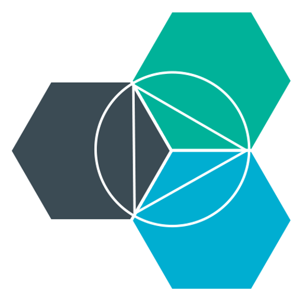

layout: true <div class="nav-buttons no-print"> <img onclick="javascript:slideshow.gotoNextSlide()" src="../../glyphicons_free/glyphicons/png/glyphicons_176_forward.png" title="next" height=16 class="bg-white"> <span class="width:3em"> </span> <i>use cursor keys or touch swipes to scroll</i> </div> .comment[======================================================================] --- # pushing a node app to Cloud Foundry ### *You won't believe what really happens!* Patrick Mueller - IBMer - [`@pmuellr`](https://twitter.com/pmuellr) - [`muellerware.org`](http://muellerware.org) .smaller[ .smaller[<http://pmuellr.github.io/slides/2014/04-what-happens-when-you-push-a-node-app>] ] .comment[======================================================================] --- layout: true <div class="nav-buttons no-print"> <img onclick="javascript:slideshow.gotoNextSlide()" src="../../glyphicons_free/glyphicons/png/glyphicons_176_forward.png" title="next" height=16 class="bg-white"> </div> <div class="page-icon"> <img height=24 src="../../images/js.png">  </div> .comment[======================================================================] --- ## Patrick Mueller developer advocate at IBM BlueMix Platform-as-a-Service and node.js Raleigh, NC more of my slides: <http://pmuellr.github.io/slides> <button onclick="javascript:toggleRatio()">toggle 4:3 / 16:9</button> <button onclick="javascript:toggleNavButtons()">toggle navigation buttons</button> .comment[======================================================================] --- ## what is BlueMix? * IBM Platform-as-a-Service product * Runs node apps! Runs any apps! * Based on the [Cloud Foundry](http://cloudfoundry.org) open source project. For more info: <https://bluemix.net> .comment[======================================================================] --- ## attribution JS Logo from <https://github.com/voodootikigod/logo.js> Slide framework from <http://remarkjs.com/> GlyphIcons Free from <http://glyphicons.com/> Cloud Foundry icon from somewhere. .comment[======================================================================] --- ## overview 1. [the process](#process) 2. [the files](#files) .comment[======================================================================] --- name: process class: center, middle # the process .comment[======================================================================] --- ## the process 1. determine files to upload 2. upload files to staging machine 3. select buildpack 4. run buildpack on staging machine 5. store buildpack output as a droplet 6. start app with the new droplet .comment[======================================================================] --- ## the `cf push` command * [notes on usage](http://docs.cloudfoundry.org/devguide/installcf/whats-new-v6.html) * run `cf help push` on the command-line for help * we will be running the command `cf push` in the directory with the node app, with no other command line arguments or options. .comment[======================================================================] --- ## determine files to upload By default `cf push` will collect all the files in your current directory, recursively. Prevent files from being uploaded by specifying them in your `.cfignore` file - more on that in later slides. You will want to make sure you don't upload: * files that aren't used when the app is running * files with sensitive data, unless you know what you are doing .comment[======================================================================] --- ## upload files to staging machine The files are placed in a compressed archive, and uploaded to a staging machine for further processing. .comment[======================================================================] --- ## select buildpack Once the files are uploaded to a staging machine, a buildpack is selected. The existance of a `package.json` is what the node buildpack uses to identify these files as a node application. .comment[======================================================================] --- ## run buildpack on staging machine The buildpack `compile` step is run, which will: * download an appropriate version of the node runtime, and npm * run `npm install --production` to ensure the required modules are loaded * run `npm rebuild` to recompile native node modules, if required .comment[======================================================================] --- ## store buildpack output as a droplet The buildpack output will consist of: * a node runtime * your application files * node packages in the node_modules directory, built for the correct platform This will be placed in a compressed archive as a "droplet" .comment[======================================================================] --- ## start app with the new droplet A Droplet Execution Agent (DEA) is assigned to run the droplet. The droplet is unpacked, and the start command is used to start the application. .comment[======================================================================] --- ## staging optimizations For node, a significant amount of time is spent on the staging machine to run the `npm install` command. And it turns out, it's usually installing the same packages, each time. To optimize this, the modules installed by the staging machine are saved between `cf push` invocations, and reused for subsequent `cf push` invocations. A fresh `npm install` will be run if on a subsequent `cf push`, the contents of your `package.json` file changes. .comment[======================================================================] --- ## common problems during staging or application start * did you create a `Procfile` to indicate the start command? * is npm down? this could cause staging to fail; check on your local machine * did you check for errors / failures in your startup code? * is there lots of logging in your startup code? .comment[======================================================================] --- name: files class: center, middle # the files .comment[======================================================================] --- ## the files [sample hello world program](https://hub.jazz.net/project/pmuellr/bluemix-hello-node/overview) ``` .gitignore .cfignore Procfile manifest.yml node_modules/... package.json server.js ``` .comment[======================================================================] --- class: center, middle ## `.cfignore` .comment[======================================================================] --- ## `.cfignore` * like a `.gitignore` file * indicates files to NOT upload to Cloud Foundry * `.git`, `.svn`, and `.darcs` files ignored by default .comment[======================================================================] --- ## `.cfignore` sample ``` node_modules bower_components tmp ``` for more info, see the [cf docs](http://docs.cloudfoundry.org/devguide/deploy-apps/prepare-to-deploy.html) .comment[======================================================================] --- class: center, middle ## `Procfile` .comment[======================================================================] --- ## `Procfile` * patterned off of [Heroku's Procfile](https://devcenter.heroku.com/articles/procfile) * will make your app more compatible with Heroku * won't need to use the "start command" option * only ever contains one line ``` web: node [main program here] ``` .comment[======================================================================] --- class: center, middle ## `manifest.yml` .comment[======================================================================] --- ## rules of pushing apps -- 1. always use a `manifest.yml` file -- 2. .underline[**always use a `manifest.yml` file**] .comment[======================================================================] --- ## `manifest.yml` * provides initial settings for your app, including * app name, as cf knows it * host name, for the final URL to the app * RAM requirements * cf services to bind to * etc .comment[======================================================================] --- ## `manifest.yml` sample .comment[======================================================================] ``` --- applications: - name: hello-node host: hello-node-${random-word} memory: 128M ``` for more info, see the [cf docs](http://docs.cloudfoundry.org/devguide/deploy-apps/manifest.html) Sample applications use often use `${random-word}` in the `host` property, so that your app's URL doesn't collide with someone else's. .comment[======================================================================] --- ## `manifest.yml` generator Some YAML-challenged folks, such as myself, might want to use the [`cfmanigen`](http://cfmanigen.ng.bluemix.net/) web application (running on BlueMix) to generate your `manifest.yml` files. This app gives you a fill-in-the-blank form, for entries in the manifest, and then generates the manifest for you in a click of a button. For more information, see [the DeveloperWorks blog post](https://www.ibmdw.net/bluemix/2014/04/30/bluemix-cloud-foundry-manifest-generator/) which discusses the `cfmanigen` app. .comment[======================================================================] --- class: center, middle ## `node_modules/...` .comment[======================================================================] --- ## `node_modules/...` The `node_modules` directory is where `npm` installs packages for your application. You can choose to upload your node_modules directory, along with your app, or to **NOT** upload them. .comment[======================================================================] --- ## `node_modules/...` uploading pros: * more control over the modules used in the app * faster "staging" since modules are already available cons: * longer upload for staging process, for each `cf push` .comment[======================================================================] --- ## `node_modules/...` uploading recommend: * not uploading controlled via: * `node_modules` entry in `.cfignore` file .comment[======================================================================] --- class: center, middle ## `package.json` .comment[======================================================================] --- ## rules of pushing apps 1. always use a `manifest.yml` file 2. .underline[**always use a `manifest.yml` file**] -- 3. always use a `package.json` file -- 4. .underline[**always use a `package.json` file**] .comment[======================================================================] --- ## `package.json` * nothing special needed for Cloud Foundry! * file **MUST** exist, or app will not be recognized as a "node" application during staging * may need/want to tweak for running on Cloud Foundry machines: * set specific version of node to use; see the [note at Pivotal](http://support.run.pivotal.io/entries/45576443-NodeJS-App-Push-Failing) concerning use of some native modules for node. .comment[======================================================================] --- class: center, middle ## `server.js` .comment[======================================================================] --- ## `server.js` Your application code. For the sample hello world server, that is just this single file. You will likely have other files and directories containing the code for your app. .comment[======================================================================] --- class: center, middle # `fin` <!-- ======================================================================= -->